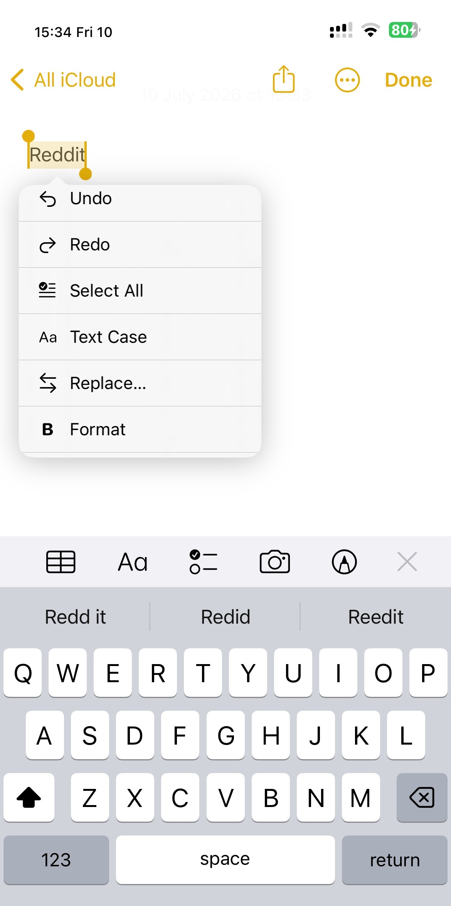
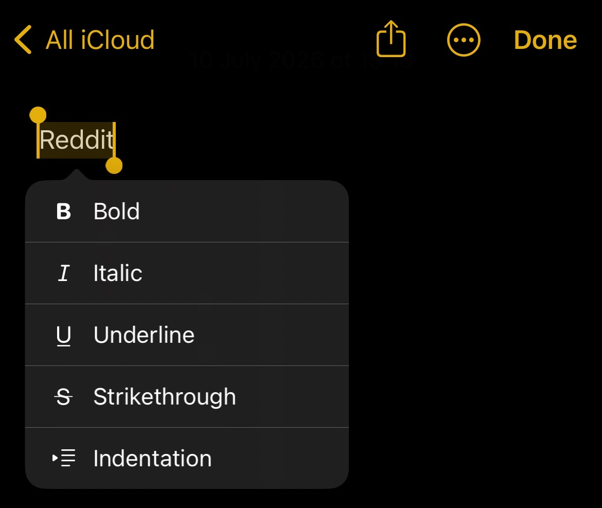

Compact vertical edit menu for iOS 16 rootless jailbreaks.
Inspired by FancySelection by MiRO92.
Screenshots


Features
- Vertical, scrollable iOS edit menu
- Icons for common actions
- Text Case and Format menus
- Text Style menu: unicode fonts (bold, italic, serif, script, gothic, hollow, circled) that work even where apps have no real formatting
Changelog
1.1.0
- Menu opens much faster — it was doing way too much redundant work behind the scenes
- New Text Style menu with unicode fonts; hidden where the app already offers native bold/italic (no duplicates in Notes)
- Plain now resets any unicode style, from the Text Case menu
- Fixed: text transforms no longer wipe native bold/italic/underline
- Fixed: changing case could produce weird lookalike characters
- Fixed: icons could disappear when scrolling the menu
1.0.0
Compatibility
Tested on iOS 16.4.1.
TextMenuPlus by schlub51.